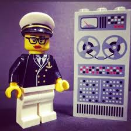

Amazing Grace
Grace Brewster Murray Hopper (December 9, 1906 – January 1, 1992) was an American computer scientist and United States Navy rear admiral.She was a pioneer of computer programming who invented one of the first compiler related tools. She led to the development of COBOL. In 1947, her team literally "debugged" the Mark I computer, removing a moth that was stuck in the computer's relay.
At the time of her retirement, she was the oldest active-duty commissioned officer in the United States Navy (79 years, eight months and five days).
On November 22, 2016 Grace was posthumously awarded a Presidential Medal of Freedom for her accomplishments in the field of computer science.
Grace was featured in Google Doodle on 9-Dec-2013 to commemorate her 107th birthday.